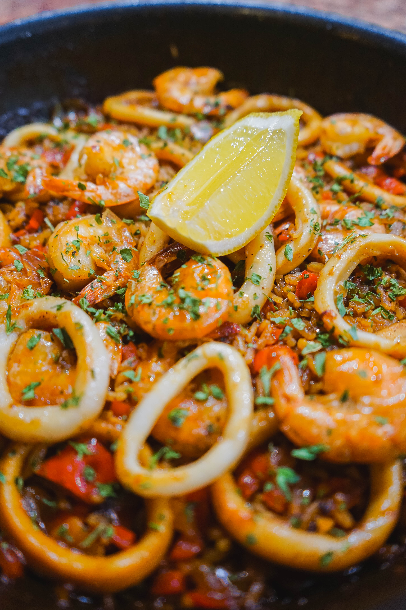

Je dresse la table de ma nouvelle vie et le festin est sur mon chemin 😋.

PaellaSteak with Carrort Potato and PeaBeef Bourguignon 1Beef Bourguignon 2.jpgSmoked Salmon with Broccoli and BasilBacon Salmon and Potato SmashCod with SaladSalad with Fried Cod